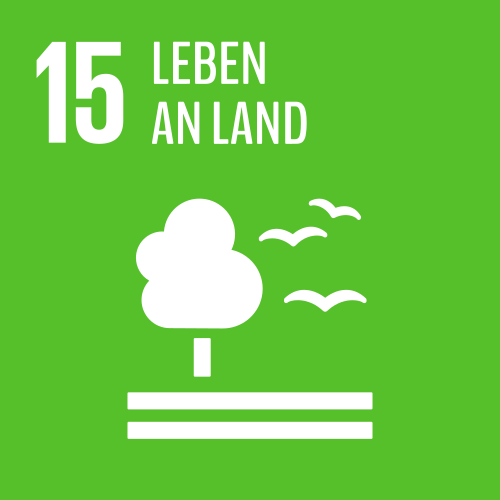

…Wälder nachhaltig bewirtschaften, Wüstenbildung bekämpfen, Bodendegradation beenden und umkehren und dem Verlust der biologischen Vielfalt ein Ende setzen.
Der Verlust der biologischen Vielfalt nimmt zu, dabei ist sie Grundlage unseres Lebens – und diese wird gerade im rasanten Tempo zerstört. Schätzungen zufolge haben sich 60 Prozent der weltweiten Ökosysteme verschlechtert oder werden nicht nachhaltig genutzt. 75 Prozent der genetischen Vielfalt landwirtschaftlicher Kulturen gingen seit 1990 verloren. Mehr als die Hälfte der Regenwälder wurden für die Palmöl-, Agrartreibstoff-, Futtermittel- und Fleischproduktion bereits vernichtet.
„Wir müssen die Warnung ernst nehmen, die Menschheit habe bereits ’planetary boundaries‘ überschritten und sei dabei, ’ihren‘ Planeten zugrunde zu richten.“
(Elmar Altvater, Politikwissenschaftler)
